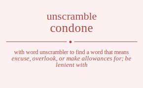

The word found after unscrambling condone means that excuse, overlook, or make allowances for; be lenient with, .

The word found after unscrambling condone means that excuse, overlook, or make allowances for; be lenient with, .
You can also find solutions for different combinations of letters in condone like condone condoen condnoe condneo condeon condeno conodne conoden cononde cononed conoedn conoend conndoe conndeo connode connoed connedo conneod conedon conedno coneodn coneond conendo conenod codnone codnoen codnnoe codnneo codneon codneno codonne codonen codonne codonen codoenn codoenn codnnoe codnneo codnone codnoen codneno codneon codenon codenno codeonn codeonn codenno codenon coondne coonden coonnde coonned coonedn coonend coodnne coodnen coodnne coodnen coodenn coodenn coonnde coonned coondne coonden coonend coonedn cooendn cooennd cooednn cooednn cooennd cooendn conndoe conndeo connode connoed connedo conneod condnoe condneo condone condoen condeno condeon cononde cononed conodne conoden conoend conoedn conendo conenod conedno conedon coneond coneodn coendon coendno coenodn coenond coenndo coennod coednon coednno coedonn coedonn coednno coednon coeondn coeonnd coeodnn coeodnn coeonnd coeondn coenndo coennod coendno coendon coenond coenodn cnodone cnodoen cnodnoe cnodneo cnodeon cnodeno cnoodne cnooden cnoonde cnooned cnooedn cnooend cnondoe cnondeo cnonode cnonoed cnonedo cnoneod cnoedon cnoedno cnoeodn cnoeond cnoendo cnoenod cndoone cndooen cndonoe cndoneo cndoeon cndoeno cndoone cndooen cndonoe cndoneo cndoeon cndoeno cndnooe cndnoeo cndnooe cndnoeo cndneoo cndneoo cndeoon cndeono cndeoon cndeono cndenoo cndenoo cnoodne cnooden cnoonde cnooned cnooedn cnooend cnodone cnodoen cnodnoe cnodneo cnodeon cnodeno cnonode cnonoed cnondoe cnondeo cnoneod cnonedo cnoeodn cnoeond cnoedon cnoedno cnoenod cnoendo cnnodoe cnnodeo cnnoode cnnooed cnnoedo cnnoeod cnndooe cnndoeo cnndooe cnndoeo cnndeoo cnndeoo cnnoode cnnooed cnnodoe cnnodeo cnnoeod cnnoedo cnneodo cnneood cnnedoo cnnedoo cnneood cnneodo cneodon cneodno cneoodn cneoond cneondo cneonod cnedoon cnedono cnedoon cnedono cnednoo cnednoo cneoodn cneoond cneodon cneodno cneonod cneondo cnenodo cnenood cnendoo cnendoo cnenood cnenodo cdonone cdonoen cdonnoe cdonneo cdoneon cdoneno cdoonne cdoonen cdoonne cdoonen cdooenn cdooenn cdonnoe cdonneo cdonone cdonoen cdoneno cdoneon cdoenon cdoenno cdoeonn cdoeonn cdoenno cdoenon cdnoone cdnooen cdnonoe cdnoneo cdnoeon cdnoeno cdnoone cdnooen cdnonoe cdnoneo cdnoeon cdnoeno cdnnooe cdnnoeo cdnnooe cdnnoeo cdnneoo cdnneoo cdneoon cdneono cdneoon cdneono cdnenoo cdnenoo cdoonne cdoonen cdoonne cdoonen cdooenn cdooenn cdonone cdonoen cdonnoe cdonneo cdoneon cdoneno cdonone cdonoen cdonnoe cdonneo cdoneon cdoneno cdoeonn cdoeonn cdoenon cdoenno cdoenon cdoenno cdnonoe cdnoneo cdnoone cdnooen cdnoeno cdnoeon cdnnooe cdnnoeo cdnnooe cdnnoeo cdnneoo cdnneoo cdnoone cdnooen cdnonoe cdnoneo cdnoeon cdnoeno cdneono cdneoon cdnenoo cdnenoo cdneoon cdneono cdeonon cdeonno cdeoonn cdeoonn cdeonno cdeonon cdenoon cdenono cdenoon cdenono cdennoo cdennoo cdeoonn cdeoonn cdeonon cdeonno cdeonon cdeonno cdenono cdenoon cdennoo cdennoo cdenoon cdenono coondne coonden coonnde coonned coonedn coonend coodnne coodnen coodnne coodnen coodenn coodenn coonnde coonned coondne coonden coonend coonedn cooendn cooennd cooednn cooednn cooennd cooendn conodne conoden cononde cononed conoedn conoend condone condoen condnoe condneo condeon condeno connode connoed conndoe conndeo conneod connedo coneodn coneond conedon conedno conenod conendo codonne codonen codonne codonen codoenn codoenn codnone codnoen codnnoe codnneo codneon codneno codnone codnoen codnnoe codnneo codneon codneno codeonn codeonn codenon codenno codenon codenno cononde cononed conodne conoden conoend conoedn connode connoed conndoe conndeo conneod connedo condone condoen condnoe condneo condeon condeno coneond coneodn conenod conendo conedon conedno coeondn coeonnd coeodnn coeodnn coeonnd coeondn coenodn coenond coendon coendno coennod coenndo coedonn coedonn coednon coednno coednon coednno coenond coenodn coennod coenndo coendon coendno cnondoe cnondeo cnonode cnonoed cnonedo cnoneod cnodnoe cnodneo cnodone cnodoen cnodeno cnodeon cnoonde cnooned cnoodne cnooden cnooend cnooedn cnoendo cnoenod cnoedno cnoedon cnoeond cnoeodn cnnodoe cnnodeo cnnoode cnnooed cnnoedo cnnoeod cnndooe cnndoeo cnndooe cnndoeo cnndeoo cnndeoo cnnoode cnnooed cnnodoe cnnodeo cnnoeod cnnoedo cnneodo cnneood cnnedoo cnnedoo cnneood cnneodo cndonoe cndoneo cndoone cndooen cndoeno cndoeon cndnooe cndnoeo cndnooe cndnoeo cndneoo cndneoo cndoone cndooen cndonoe cndoneo cndoeon cndoeno cndeono cndeoon cndenoo cndenoo cndeoon cndeono cnoonde cnooned cnoodne cnooden cnooend cnooedn cnonode cnonoed cnondoe cnondeo cnoneod cnonedo cnodone cnodoen cnodnoe cnodneo cnodeon cnodeno cnoeond cnoeodn cnoenod cnoendo cnoedon cnoedno cneondo cneonod cneodno cneodon cneoond cneoodn cnenodo cnenood cnendoo cnendoo cnenood cnenodo cnedono cnedoon cnednoo cnednoo cnedoon cnedono cneoond cneoodn cneonod cneondo cneodon cneodno ceondon ceondno ceonodn ceonond ceonndo ceonnod ceodnon ceodnno ceodonn ceodonn ceodnno ceodnon ceoondn ceoonnd ceoodnn ceoodnn ceoonnd ceoondn ceonndo ceonnod ceondno ceondon ceonond ceonodn cenodon cenodno cenoodn cenoond cenondo cenonod cendoon cendono cendoon cendono cendnoo cendnoo cenoodn cenoond cenodon cenodno cenonod cenondo cennodo cennood cenndoo cenndoo cennood cennodo cedonon cedonno cedoonn cedoonn cedonno cedonon cednoon cednono cednoon cednono cednnoo cednnoo cedoonn cedoonn cedonon cedonno cedonon cedonno cednono cednoon cednnoo cednnoo cednoon cednono ceoondn ceoonnd ceoodnn ceoodnn ceoonnd ceoondn ceonodn ceonond ceondon ceondno ceonnod ceonndo ceodonn ceodonn ceodnon ceodnno ceodnon ceodnno ceonond ceonodn ceonnod ceonndo ceondon ceondno cenondo cenonod cenodno cenodon cenoond cenoodn cennodo cennood cenndoo cenndoo cennood cennodo cendono cendoon cendnoo cendnoo cendoon cendono cenoond cenoodn cenonod cenondo cenodon cenodno ocndone ocndoen ocndnoe ocndneo ocndeon ocndeno ocnodne ocnoden ocnonde ocnoned ocnoedn ocnoend ocnndoe ocnndeo ocnnode ocnnoed ocnnedo ocnneod ocnedon ocnedno ocneodn ocneond ocnendo ocnenod ocdnone ocdnoen ocdnnoe ocdnneo ocdneon ocdneno ocdonne ocdonen ocdonne ocdonen ocdoenn ocdoenn ocdnnoe ocdnneo ocdnone ocdnoen ocdneno ocdneon ocdenon ocdenno ocdeonn ocdeonn ocdenno ocdenon ocondne oconden oconnde oconned oconedn oconend ocodnne ocodnen ocodnne ocodnen ocodenn ocodenn oconnde oconned ocondne oconden oconend oconedn ocoendn ocoennd ocoednn ocoednn ocoennd ocoendn ocnndoe ocnndeo ocnnode ocnnoed ocnnedo ocnneod ocndnoe ocndneo ocndone ocndoen ocndeno ocndeon ocnonde ocnoned ocnodne ocnoden ocnoend ocnoedn ocnendo ocnenod ocnedno ocnedon ocneond ocneodn ocendon ocendno ocenodn ocenond ocenndo ocennod ocednon ocednno ocedonn ocedonn ocednno ocednon oceondn oceonnd oceodnn oceodnn oceonnd oceondn ocenndo ocennod ocendno ocendon ocenond ocenodn oncdone oncdoen oncdnoe oncdneo oncdeon oncdeno oncodne oncoden onconde onconed oncoedn oncoend oncndoe oncndeo oncnode oncnoed oncnedo oncneod oncedon oncedno onceodn onceond oncendo oncenod ondcone ondcoen ondcnoe ondcneo ondceon ondceno ondocne ondocen ondonce ondonec ondoecn ondoenc ondncoe ondnceo ondnoce ondnoec ondneco ondneoc ondecon ondecno ondeocn ondeonc ondenco ondenoc onocdne onocden onocnde onocned onocedn onocend onodcne onodcen onodnce onodnec onodecn onodenc ononcde ononced onondce onondec ononecd ononedc onoecdn onoecnd onoedcn onoednc onoencd onoendc onncdoe onncdeo onncode onncoed onncedo onnceod onndcoe onndceo onndoce onndoec onndeco onndeoc onnocde onnoced onnodce onnodec onnoecd onnoedc onnecdo onnecod onnedco onnedoc onneocd onneodc onecdon onecdno onecodn onecond onecndo onecnod onedcon onedcno onedocn onedonc onednco onednoc oneocdn oneocnd oneodcn oneodnc oneoncd oneondc onencdo onencod onendco onendoc onenocd onenodc odcnone odcnoen odcnnoe odcnneo odcneon odcneno odconne odconen odconne odconen odcoenn odcoenn odcnnoe odcnneo odcnone odcnoen odcneno odcneon odcenon odcenno odceonn odceonn odcenno odcenon odncone odncoen odncnoe odncneo odnceon odnceno odnocne odnocen odnonce odnonec odnoecn odnoenc odnncoe odnnceo odnnoce odnnoec odnneco odnneoc odnecon odnecno odneocn odneonc odnenco odnenoc odocnne odocnen odocnne odocnen odocenn odocenn odoncne odoncen odonnce odonnec odonecn odonenc odoncne odoncen odonnce odonnec odonecn odonenc odoecnn odoecnn odoencn odoennc odoencn odoennc odncnoe odncneo odncone odncoen odnceno odnceon odnncoe odnnceo odnnoce odnnoec odnneco odnneoc odnocne odnocen odnonce odnonec odnoecn odnoenc odnecno odnecon odnenco odnenoc odneocn odneonc odecnon odecnno odeconn odeconn odecnno odecnon odencon odencno odenocn odenonc odennco odennoc odeocnn odeocnn odeoncn odeonnc odeoncn odeonnc odencno odencon odennco odennoc odenocn odenonc oocndne oocnden oocnnde oocnned oocnedn oocnend oocdnne oocdnen oocdnne oocdnen oocdenn oocdenn oocnnde oocnned oocndne oocnden oocnend oocnedn oocendn oocennd oocednn oocednn oocennd oocendn ooncdne ooncden ooncnde ooncned ooncedn ooncend oondcne oondcen oondnce oondnec oondecn oondenc oonncde oonnced oonndce oonndec oonnecd oonnedc oonecdn oonecnd oonedcn oonednc oonencd oonendc oodcnne oodcnen oodcnne oodcnen oodcenn oodcenn oodncne oodncen oodnnce oodnnec oodnecn oodnenc oodncne oodncen oodnnce oodnnec oodnecn oodnenc oodecnn oodecnn oodencn oodennc oodencn oodennc ooncnde ooncned ooncdne ooncden ooncend ooncedn oonncde oonnced oonndce oonndec oonnecd oonnedc oondcne oondcen oondnce oondnec oondecn oondenc oonecnd oonecdn oonencd oonendc oonedcn oonednc ooecndn ooecnnd ooecdnn ooecdnn ooecnnd ooecndn ooencdn ooencnd ooendcn ooendnc ooenncd ooenndc ooedcnn ooedcnn ooedncn ooednnc ooedncn ooednnc ooencnd ooencdn ooenncd ooenndc ooendcn ooendnc oncndoe oncndeo oncnode oncnoed oncnedo oncneod oncdnoe oncdneo oncdone oncdoen oncdeno oncdeon onconde onconed oncodne oncoden oncoend oncoedn oncendo oncenod oncedno oncedon onceond onceodn onncdoe onncdeo onncode onncoed onncedo onnceod onndcoe onndceo onndoce onndoec onndeco onndeoc onnocde onnoced onnodce onnodec onnoecd onnoedc onnecdo onnecod onnedco onnedoc onneocd onneodc ondcnoe ondcneo ondcone ondcoen ondceno ondceon ondncoe ondnceo ondnoce ondnoec ondneco ondneoc ondocne ondocen ondonce ondonec ondoecn ondoenc ondecno ondecon ondenco ondenoc ondeocn ondeonc onocnde onocned onocdne onocden onocend onocedn ononcde ononced onondce onondec ononecd ononedc onodcne onodcen onodnce onodnec onodecn onodenc onoecnd onoecdn onoencd onoendc onoedcn onoednc onecndo onecnod onecdno onecdon onecond onecodn onencdo onencod onendco onendoc onenocd onenodc onedcno onedcon onednco onednoc onedocn onedonc oneocnd oneocdn oneoncd oneondc oneodcn oneodnc oecndon oecndno oecnodn oecnond oecnndo oecnnod oecdnon oecdnno oecdonn oecdonn oecdnno oecdnon oecondn oeconnd oecodnn oecodnn oeconnd oecondn oecnndo oecnnod oecndno oecndon oecnond oecnodn oencdon oencdno oencodn oencond oencndo oencnod oendcon oendcno oendocn oendonc oendnco oendnoc oenocdn oenocnd oenodcn oenodnc oenoncd oenondc oenncdo oenncod oenndco oenndoc oennocd oennodc oedcnon oedcnno oedconn oedconn oedcnno oedcnon oedncon oedncno oednocn oednonc oednnco oednnoc oedocnn oedocnn oedoncn oedonnc oedoncn oedonnc oedncno oedncon oednnco oednnoc oednocn oednonc oeocndn oeocnnd oeocdnn oeocdnn oeocnnd oeocndn oeoncdn oeoncnd oeondcn oeondnc oeonncd oeonndc oeodcnn oeodcnn oeodncn oeodnnc oeodncn oeodnnc oeoncnd oeoncdn oeonncd oeonndc oeondcn oeondnc oencndo oencnod oencdno oencdon oencond oencodn oenncdo oenncod oenndco oenndoc oennocd oennodc oendcno oendcon oendnco oendnoc oendocn oendonc oenocnd oenocdn oenoncd oenondc oenodcn oenodnc ncodone ncodoen ncodnoe ncodneo ncodeon ncodeno ncoodne ncooden ncoonde ncooned ncooedn ncooend ncondoe ncondeo nconode nconoed nconedo nconeod ncoedon ncoedno ncoeodn ncoeond ncoendo ncoenod ncdoone ncdooen ncdonoe ncdoneo ncdoeon ncdoeno ncdoone ncdooen ncdonoe ncdoneo ncdoeon ncdoeno ncdnooe ncdnoeo ncdnooe ncdnoeo ncdneoo ncdneoo ncdeoon ncdeono ncdeoon ncdeono ncdenoo ncdenoo ncoodne ncooden ncoonde ncooned ncooedn ncooend ncodone ncodoen ncodnoe ncodneo ncodeon ncodeno nconode nconoed ncondoe ncondeo nconeod nconedo ncoeodn ncoeond ncoedon ncoedno ncoenod ncoendo ncnodoe ncnodeo ncnoode ncnooed ncnoedo ncnoeod ncndooe ncndoeo ncndooe ncndoeo ncndeoo ncndeoo ncnoode ncnooed ncnodoe ncnodeo ncnoeod ncnoedo ncneodo ncneood ncnedoo ncnedoo ncneood ncneodo nceodon nceodno nceoodn nceoond nceondo nceonod ncedoon ncedono ncedoon ncedono ncednoo ncednoo nceoodn nceoond nceodon nceodno nceonod nceondo ncenodo ncenood ncendoo ncendoo ncenood ncenodo nocdone nocdoen nocdnoe nocdneo nocdeon nocdeno nocodne nocoden noconde noconed nocoedn nocoend nocndoe nocndeo nocnode nocnoed nocnedo nocneod nocedon nocedno noceodn noceond nocendo nocenod nodcone nodcoen nodcnoe nodcneo nodceon nodceno nodocne nodocen nodonce nodonec nodoecn nodoenc nodncoe nodnceo nodnoce nodnoec nodneco nodneoc nodecon nodecno nodeocn nodeonc nodenco nodenoc noocdne noocden noocnde noocned noocedn noocend noodcne noodcen noodnce noodnec noodecn noodenc nooncde noonced noondce noondec noonecd noonedc nooecdn nooecnd nooedcn nooednc nooencd nooendc noncdoe noncdeo noncode noncoed noncedo nonceod nondcoe nondceo nondoce nondoec nondeco nondeoc nonocde nonoced nonodce nonodec nonoecd nonoedc nonecdo nonecod nonedco nonedoc noneocd noneodc noecdon noecdno noecodn noecond noecndo noecnod noedcon noedcno noedocn noedonc noednco noednoc noeocdn noeocnd noeodcn noeodnc noeoncd noeondc noencdo noencod noendco noendoc noenocd noenodc ndcoone ndcooen ndconoe ndconeo ndcoeon ndcoeno ndcoone ndcooen ndconoe ndconeo ndcoeon ndcoeno ndcnooe ndcnoeo ndcnooe ndcnoeo ndcneoo ndcneoo ndceoon ndceono ndceoon ndceono ndcenoo ndcenoo ndocone ndocoen ndocnoe ndocneo ndoceon ndoceno ndoocne ndoocen ndoonce ndoonec ndooecn ndooenc ndoncoe ndonceo ndonoce ndonoec ndoneco ndoneoc ndoecon ndoecno ndoeocn ndoeonc ndoenco ndoenoc ndocone ndocoen ndocnoe ndocneo ndoceon ndoceno ndoocne ndoocen ndoonce ndoonec ndooecn ndooenc ndoncoe ndonceo ndonoce ndonoec ndoneco ndoneoc ndoecon ndoecno ndoeocn ndoeonc ndoenco ndoenoc ndncooe ndncoeo ndncooe ndncoeo ndnceoo ndnceoo ndnocoe ndnoceo ndnooce ndnooec ndnoeco ndnoeoc ndnocoe ndnoceo ndnooce ndnooec ndnoeco ndnoeoc ndnecoo ndnecoo ndneoco ndneooc ndneoco ndneooc ndecoon ndecono ndecoon ndecono ndecnoo ndecnoo ndeocon ndeocno ndeoocn ndeoonc ndeonco ndeonoc ndeocon ndeocno ndeoocn ndeoonc ndeonco ndeonoc ndencoo ndencoo ndenoco ndenooc ndenoco ndenooc nocodne nocoden noconde noconed nocoedn nocoend nocdone nocdoen nocdnoe nocdneo nocdeon nocdeno nocnode nocnoed nocndoe nocndeo nocneod nocnedo noceodn noceond nocedon nocedno nocenod nocendo noocdne noocden noocnde noocned noocedn noocend noodcne noodcen noodnce noodnec noodecn noodenc nooncde noonced noondce noondec noonecd noonedc nooecdn nooecnd nooedcn nooednc nooencd nooendc nodcone nodcoen nodcnoe nodcneo nodceon nodceno nodocne nodocen nodonce nodonec nodoecn nodoenc nodncoe nodnceo nodnoce nodnoec nodneco nodneoc nodecon nodecno nodeocn nodeonc nodenco nodenoc noncode noncoed noncdoe noncdeo nonceod noncedo nonocde nonoced nonodce nonodec nonoecd nonoedc nondcoe nondceo nondoce nondoec nondeco nondeoc nonecod nonecdo noneocd noneodc nonedco nonedoc noecodn noecond noecdon noecdno noecnod noecndo noeocdn noeocnd noeodcn noeodnc noeoncd noeondc noedcon noedcno noedocn noedonc noednco noednoc noencod noencdo noenocd noenodc noendco noendoc nncodoe nncodeo nncoode nncooed nncoedo nncoeod nncdooe nncdoeo nncdooe nncdoeo nncdeoo nncdeoo nncoode nncooed nncodoe nncodeo nncoeod nncoedo nnceodo nnceood nncedoo nncedoo nnceood nnceodo nnocdoe nnocdeo nnocode nnocoed nnocedo nnoceod nnodcoe nnodceo nnodoce nnodoec nnodeco nnodeoc nnoocde nnooced nnoodce nnoodec nnooecd nnooedc nnoecdo nnoecod nnoedco nnoedoc nnoeocd nnoeodc nndcooe nndcoeo nndcooe nndcoeo nndceoo nndceoo nndocoe nndoceo nndooce nndooec nndoeco nndoeoc nndocoe nndoceo nndooce nndooec nndoeco nndoeoc nndecoo nndecoo nndeoco nndeooc nndeoco nndeooc nnocode nnocoed nnocdoe nnocdeo nnoceod nnocedo nnoocde nnooced nnoodce nnoodec nnooecd nnooedc nnodcoe nnodceo nnodoce nnodoec nnodeco nnodeoc nnoecod nnoecdo nnoeocd nnoeodc nnoedco nnoedoc nnecodo nnecood nnecdoo nnecdoo nnecood nnecodo nneocdo nneocod nneodco nneodoc nneoocd nneoodc nnedcoo nnedcoo nnedoco nnedooc nnedoco nnedooc nneocod nneocdo nneoocd nneoodc nneodco nneodoc necodon necodno necoodn necoond necondo neconod necdoon necdono necdoon necdono necdnoo necdnoo necoodn necoond necodon necodno neconod necondo necnodo necnood necndoo necndoo necnood necnodo neocdon neocdno neocodn neocond neocndo neocnod neodcon neodcno neodocn neodonc neodnco neodnoc neoocdn neoocnd neoodcn neoodnc neooncd neoondc neoncdo neoncod neondco neondoc neonocd neonodc nedcoon nedcono nedcoon nedcono nedcnoo nedcnoo nedocon nedocno nedoocn nedoonc nedonco nedonoc nedocon nedocno nedoocn nedoonc nedonco nedonoc nedncoo nedncoo nednoco nednooc nednoco nednooc neocodn neocond neocdon neocdno neocnod neocndo neoocdn neoocnd neoodcn neoodnc neooncd neoondc neodcon neodcno neodocn neodonc neodnco neodnoc neoncod neoncdo neonocd neonodc neondco neondoc nencodo nencood nencdoo nencdoo nencood nencodo nenocdo nenocod nenodco nenodoc nenoocd nenoodc nendcoo nendcoo nendoco nendooc nendoco nendooc nenocod nenocdo nenoocd nenoodc nenodco nenodoc dconone dconoen dconnoe dconneo dconeon dconeno dcoonne dcoonen dcoonne dcoonen dcooenn dcooenn dconnoe dconneo dconone dconoen dconeno dconeon dcoenon dcoenno dcoeonn dcoeonn dcoenno dcoenon dcnoone dcnooen dcnonoe dcnoneo dcnoeon dcnoeno dcnoone dcnooen dcnonoe dcnoneo dcnoeon dcnoeno dcnnooe dcnnoeo dcnnooe dcnnoeo dcnneoo dcnneoo dcneoon dcneono dcneoon dcneono dcnenoo dcnenoo dcoonne dcoonen dcoonne dcoonen dcooenn dcooenn dconone dconoen dconnoe dconneo dconeon dconeno dconone dconoen dconnoe dconneo dconeon dconeno dcoeonn dcoeonn dcoenon dcoenno dcoenon dcoenno dcnonoe dcnoneo dcnoone dcnooen dcnoeno dcnoeon dcnnooe dcnnoeo dcnnooe dcnnoeo dcnneoo dcnneoo dcnoone dcnooen dcnonoe dcnoneo dcnoeon dcnoeno dcneono dcneoon dcnenoo dcnenoo dcneoon dcneono dceonon dceonno dceoonn dceoonn dceonno dceonon dcenoon dcenono dcenoon dcenono dcennoo dcennoo dceoonn dceoonn dceonon dceonno dceonon dceonno dcenono dcenoon dcennoo dcennoo dcenoon dcenono docnone docnoen docnnoe docnneo docneon docneno doconne doconen doconne doconen docoenn docoenn docnnoe docnneo docnone docnoen docneno docneon docenon docenno doceonn doceonn docenno docenon doncone doncoen doncnoe doncneo donceon donceno donocne donocen dononce dononec donoecn donoenc donncoe donnceo donnoce donnoec donneco donneoc donecon donecno doneocn doneonc donenco donenoc doocnne doocnen doocnne doocnen doocenn doocenn dooncne dooncen doonnce doonnec doonecn doonenc dooncne dooncen doonnce doonnec doonecn doonenc dooecnn dooecnn dooencn dooennc dooencn dooennc doncnoe doncneo doncone doncoen donceno donceon donncoe donnceo donnoce donnoec donneco donneoc donocne donocen dononce dononec donoecn donoenc donecno donecon donenco donenoc doneocn doneonc doecnon doecnno doeconn doeconn doecnno doecnon doencon doencno doenocn doenonc doennco doennoc doeocnn doeocnn doeoncn doeonnc doeoncn doeonnc doencno doencon doennco doennoc doenocn doenonc dncoone dncooen dnconoe dnconeo dncoeon dncoeno dncoone dncooen dnconoe dnconeo dncoeon dncoeno dncnooe dncnoeo dncnooe dncnoeo dncneoo dncneoo dnceoon dnceono dnceoon dnceono dncenoo dncenoo dnocone dnocoen dnocnoe dnocneo dnoceon dnoceno dnoocne dnoocen dnoonce dnoonec dnooecn dnooenc dnoncoe dnonceo dnonoce dnonoec dnoneco dnoneoc dnoecon dnoecno dnoeocn dnoeonc dnoenco dnoenoc dnocone dnocoen dnocnoe dnocneo dnoceon dnoceno dnoocne dnoocen dnoonce dnoonec dnooecn dnooenc dnoncoe dnonceo dnonoce dnonoec dnoneco dnoneoc dnoecon dnoecno dnoeocn dnoeonc dnoenco dnoenoc dnncooe dnncoeo dnncooe dnncoeo dnnceoo dnnceoo dnnocoe dnnoceo dnnooce dnnooec dnnoeco dnnoeoc dnnocoe dnnoceo dnnooce dnnooec dnnoeco dnnoeoc dnnecoo dnnecoo dnneoco dnneooc dnneoco dnneooc dnecoon dnecono dnecoon dnecono dnecnoo dnecnoo dneocon dneocno dneoocn dneoonc dneonco dneonoc dneocon dneocno dneoocn dneoonc dneonco dneonoc dnencoo dnencoo dnenoco dnenooc dnenoco dnenooc doconne doconen doconne doconen docoenn docoenn docnone docnoen docnnoe docnneo docneon docneno docnone docnoen docnnoe docnneo docneon docneno doceonn doceonn docenon docenno docenon docenno doocnne doocnen doocnne doocnen doocenn doocenn dooncne dooncen doonnce doonnec doonecn doonenc dooncne dooncen doonnce doonnec doonecn doonenc dooecnn dooecnn dooencn dooennc dooencn dooennc doncone doncoen doncnoe doncneo donceon donceno donocne donocen dononce dononec donoecn donoenc donncoe donnceo donnoce donnoec donneco donneoc donecon donecno doneocn doneonc donenco donenoc doncone doncoen doncnoe doncneo donceon donceno donocne donocen dononce dononec donoecn donoenc donncoe donnceo donnoce donnoec donneco donneoc donecon donecno doneocn doneonc donenco donenoc doeconn doeconn doecnon doecnno doecnon doecnno doeocnn doeocnn doeoncn doeonnc doeoncn doeonnc doencon doencno doenocn doenonc doennco doennoc doencon doencno doenocn doenonc doennco doennoc dnconoe dnconeo dncoone dncooen dncoeno dncoeon dncnooe dncnoeo dncnooe dncnoeo dncneoo dncneoo dncoone dncooen dnconoe dnconeo dncoeon dncoeno dnceono dnceoon dncenoo dncenoo dnceoon dnceono dnocnoe dnocneo dnocone dnocoen dnoceno dnoceon dnoncoe dnonceo dnonoce dnonoec dnoneco dnoneoc dnoocne dnoocen dnoonce dnoonec dnooecn dnooenc dnoecno dnoecon dnoenco dnoenoc dnoeocn dnoeonc dnncooe dnncoeo dnncooe dnncoeo dnnceoo dnnceoo dnnocoe dnnoceo dnnooce dnnooec dnnoeco dnnoeoc dnnocoe dnnoceo dnnooce dnnooec dnnoeco dnnoeoc dnnecoo dnnecoo dnneoco dnneooc dnneoco dnneooc dnocone dnocoen dnocnoe dnocneo dnoceon dnoceno dnoocne dnoocen dnoonce dnoonec dnooecn dnooenc dnoncoe dnonceo dnonoce dnonoec dnoneco dnoneoc dnoecon dnoecno dnoeocn dnoeonc dnoenco dnoenoc dnecono dnecoon dnecnoo dnecnoo dnecoon dnecono dneocno dneocon dneonco dneonoc dneoocn dneoonc dnencoo dnencoo dnenoco dnenooc dnenoco dnenooc dneocon dneocno dneoocn dneoonc dneonco dneonoc deconon deconno decoonn decoonn deconno deconon decnoon decnono decnoon decnono decnnoo decnnoo decoonn decoonn deconon deconno deconon deconno decnono decnoon decnnoo decnnoo decnoon decnono deocnon deocnno deoconn deoconn deocnno deocnon deoncon deoncno deonocn deononc deonnco deonnoc deoocnn deoocnn deooncn deoonnc deooncn deoonnc deoncno deoncon deonnco deonnoc deonocn deononc dencoon dencono dencoon dencono dencnoo dencnoo denocon denocno denoocn denoonc denonco denonoc denocon denocno denoocn denoonc denonco denonoc denncoo denncoo dennoco dennooc dennoco dennooc deoconn deoconn deocnon deocnno deocnon deocnno deoocnn deoocnn deooncn deoonnc deooncn deoonnc deoncon deoncno deonocn deononc deonnco deonnoc deoncon deoncno deonocn deononc deonnco deonnoc dencono dencoon dencnoo dencnoo dencoon dencono denocno denocon denonco denonoc denoocn denoonc denncoo denncoo dennoco dennooc dennoco dennooc denocon denocno denoocn denoonc denonco denonoc ocondne oconden oconnde oconned oconedn oconend ocodnne ocodnen ocodnne ocodnen ocodenn ocodenn oconnde oconned ocondne oconden oconend oconedn ocoendn ocoennd ocoednn ocoednn ocoennd ocoendn ocnodne ocnoden ocnonde ocnoned ocnoedn ocnoend ocndone ocndoen ocndnoe ocndneo ocndeon ocndeno ocnnode ocnnoed ocnndoe ocnndeo ocnneod ocnnedo ocneodn ocneond ocnedon ocnedno ocnenod ocnendo ocdonne ocdonen ocdonne ocdonen ocdoenn ocdoenn ocdnone ocdnoen ocdnnoe ocdnneo ocdneon ocdneno ocdnone ocdnoen ocdnnoe ocdnneo ocdneon ocdneno ocdeonn ocdeonn ocdenon ocdenno ocdenon ocdenno ocnonde ocnoned ocnodne ocnoden ocnoend ocnoedn ocnnode ocnnoed ocnndoe ocnndeo ocnneod ocnnedo ocndone ocndoen ocndnoe ocndneo ocndeon ocndeno ocneond ocneodn ocnenod ocnendo ocnedon ocnedno oceondn oceonnd oceodnn oceodnn oceonnd oceondn ocenodn ocenond ocendon ocendno ocennod ocenndo ocedonn ocedonn ocednon ocednno ocednon ocednno ocenond ocenodn ocennod ocenndo ocendon ocendno oocndne oocnden oocnnde oocnned oocnedn oocnend oocdnne oocdnen oocdnne oocdnen oocdenn oocdenn oocnnde oocnned oocndne oocnden oocnend oocnedn oocendn oocennd oocednn oocednn oocennd oocendn ooncdne ooncden ooncnde ooncned ooncedn ooncend oondcne oondcen oondnce oondnec oondecn oondenc oonncde oonnced oonndce oonndec oonnecd oonnedc oonecdn oonecnd oonedcn oonednc oonencd oonendc oodcnne oodcnen oodcnne oodcnen oodcenn oodcenn oodncne oodncen oodnnce oodnnec oodnecn oodnenc oodncne oodncen oodnnce oodnnec oodnecn oodnenc oodecnn oodecnn oodencn oodennc oodencn oodennc ooncnde ooncned ooncdne ooncden ooncend ooncedn oonncde oonnced oonndce oonndec oonnecd oonnedc oondcne oondcen oondnce oondnec oondecn oondenc oonecnd oonecdn oonencd oonendc oonedcn oonednc ooecndn ooecnnd ooecdnn ooecdnn ooecnnd ooecndn ooencdn ooencnd ooendcn ooendnc ooenncd ooenndc ooedcnn ooedcnn ooedncn ooednnc ooedncn ooednnc ooencnd ooencdn ooenncd ooenndc ooendcn ooendnc oncodne oncoden onconde onconed oncoedn oncoend oncdone oncdoen oncdnoe oncdneo oncdeon oncdeno oncnode oncnoed oncndoe oncndeo oncneod oncnedo onceodn onceond oncedon oncedno oncenod oncendo onocdne onocden onocnde onocned onocedn onocend onodcne onodcen onodnce onodnec onodecn onodenc ononcde ononced onondce onondec ononecd ononedc onoecdn onoecnd onoedcn onoednc onoencd onoendc ondcone ondcoen ondcnoe ondcneo ondceon ondceno ondocne ondocen ondonce ondonec ondoecn ondoenc ondncoe ondnceo ondnoce ondnoec ondneco ondneoc ondecon ondecno ondeocn ondeonc ondenco ondenoc onncode onncoed onncdoe onncdeo onnceod onncedo onnocde onnoced onnodce onnodec onnoecd onnoedc onndcoe onndceo onndoce onndoec onndeco onndeoc onnecod onnecdo onneocd onneodc onnedco onnedoc onecodn onecond onecdon onecdno onecnod onecndo oneocdn oneocnd oneodcn oneodnc oneoncd oneondc onedcon onedcno onedocn onedonc onednco onednoc onencod onencdo onenocd onenodc onendco onendoc odconne odconen odconne odconen odcoenn odcoenn odcnone odcnoen odcnnoe odcnneo odcneon odcneno odcnone odcnoen odcnnoe odcnneo odcneon odcneno odceonn odceonn odcenon odcenno odcenon odcenno odocnne odocnen odocnne odocnen odocenn odocenn odoncne odoncen odonnce odonnec odonecn odonenc odoncne odoncen odonnce odonnec odonecn odonenc odoecnn odoecnn odoencn odoennc odoencn odoennc odncone odncoen odncnoe odncneo odnceon odnceno odnocne odnocen odnonce odnonec odnoecn odnoenc odnncoe odnnceo odnnoce odnnoec odnneco odnneoc odnecon odnecno odneocn odneonc odnenco odnenoc odncone odncoen odncnoe odncneo odnceon odnceno odnocne odnocen odnonce odnonec odnoecn odnoenc odnncoe odnnceo odnnoce odnnoec odnneco odnneoc odnecon odnecno odneocn odneonc odnenco odnenoc odeconn odeconn odecnon odecnno odecnon odecnno odeocnn odeocnn odeoncn odeonnc odeoncn odeonnc odencon odencno odenocn odenonc odennco odennoc odencon odencno odenocn odenonc odennco odennoc onconde onconed oncodne oncoden oncoend oncoedn oncnode oncnoed oncndoe oncndeo oncneod oncnedo oncdone oncdoen oncdnoe oncdneo oncdeon oncdeno onceond onceodn oncenod oncendo oncedon oncedno onocnde onocned onocdne onocden onocend onocedn ononcde ononced onondce onondec ononecd ononedc onodcne onodcen onodnce onodnec onodecn onodenc onoecnd onoecdn onoencd onoendc onoedcn onoednc onncode onncoed onncdoe onncdeo onnceod onncedo onnocde onnoced onnodce onnodec onnoecd onnoedc onndcoe onndceo onndoce onndoec onndeco onndeoc onnecod onnecdo onneocd onneodc onnedco onnedoc ondcone ondcoen ondcnoe ondcneo ondceon ondceno ondocne ondocen ondonce ondonec ondoecn ondoenc ondncoe ondnceo ondnoce ondnoec ondneco ondneoc ondecon ondecno ondeocn ondeonc ondenco ondenoc onecond onecodn onecnod onecndo onecdon onecdno oneocnd oneocdn oneoncd oneondc oneodcn oneodnc onencod onencdo onenocd onenodc onendco onendoc onedcon onedcno onedocn onedonc onednco onednoc oecondn oeconnd oecodnn oecodnn oeconnd oecondn oecnodn oecnond oecndon oecndno oecnnod oecnndo oecdonn oecdonn oecdnon oecdnno oecdnon oecdnno oecnond oecnodn oecnnod oecnndo oecndon oecndno oeocndn oeocnnd oeocdnn oeocdnn oeocnnd oeocndn oeoncdn oeoncnd oeondcn oeondnc oeonncd oeonndc oeodcnn oeodcnn oeodncn oeodnnc oeodncn oeodnnc oeoncnd oeoncdn oeonncd oeonndc oeondcn oeondnc oencodn oencond oencdon oencdno oencnod oencndo oenocdn oenocnd oenodcn oenodnc oenoncd oenondc oendcon oendcno oendocn oendonc oendnco oendnoc oenncod oenncdo oennocd oennodc oenndco oenndoc oedconn oedconn oedcnon oedcnno oedcnon oedcnno oedocnn oedocnn oedoncn oedonnc oedoncn oedonnc oedncon oedncno oednocn oednonc oednnco oednnoc oedncon oedncno oednocn oednonc oednnco oednnoc oencond oencodn oencnod oencndo oencdon oencdno oenocnd oenocdn oenoncd oenondc oenodcn oenodnc oenncod oenncdo oennocd oennodc oenndco oenndoc oendcon oendcno oendocn oendonc oendnco oendnoc ncondoe ncondeo nconode nconoed nconedo nconeod ncodnoe ncodneo ncodone ncodoen ncodeno ncodeon ncoonde ncooned ncoodne ncooden ncooend ncooedn ncoendo ncoenod ncoedno ncoedon ncoeond ncoeodn ncnodoe ncnodeo ncnoode ncnooed ncnoedo ncnoeod ncndooe ncndoeo ncndooe ncndoeo ncndeoo ncndeoo ncnoode ncnooed ncnodoe ncnodeo ncnoeod ncnoedo ncneodo ncneood ncnedoo ncnedoo ncneood ncneodo ncdonoe ncdoneo ncdoone ncdooen ncdoeno ncdoeon ncdnooe ncdnoeo ncdnooe ncdnoeo ncdneoo ncdneoo ncdoone ncdooen ncdonoe ncdoneo ncdoeon ncdoeno ncdeono ncdeoon ncdenoo ncdenoo ncdeoon ncdeono ncoonde ncooned ncoodne ncooden ncooend ncooedn nconode nconoed ncondoe ncondeo nconeod nconedo ncodone ncodoen ncodnoe ncodneo ncodeon ncodeno ncoeond ncoeodn ncoenod ncoendo ncoedon ncoedno nceondo nceonod nceodno nceodon nceoond nceoodn ncenodo ncenood ncendoo ncendoo ncenood ncenodo ncedono ncedoon ncednoo ncednoo ncedoon ncedono nceoond nceoodn nceonod nceondo nceodon nceodno nocndoe nocndeo nocnode nocnoed nocnedo nocneod nocdnoe nocdneo nocdone nocdoen nocdeno nocdeon noconde noconed nocodne nocoden nocoend nocoedn nocendo nocenod nocedno nocedon noceond noceodn noncdoe noncdeo noncode noncoed noncedo nonceod nondcoe nondceo nondoce nondoec nondeco nondeoc nonocde nonoced nonodce nonodec nonoecd nonoedc nonecdo nonecod nonedco nonedoc noneocd noneodc nodcnoe nodcneo nodcone nodcoen nodceno nodceon nodncoe nodnceo nodnoce nodnoec nodneco nodneoc nodocne nodocen nodonce nodonec nodoecn nodoenc nodecno nodecon nodenco nodenoc nodeocn nodeonc noocnde noocned noocdne noocden noocend noocedn nooncde noonced noondce noondec noonecd noonedc noodcne noodcen noodnce noodnec noodecn noodenc nooecnd nooecdn nooencd nooendc nooedcn nooednc noecndo noecnod noecdno noecdon noecond noecodn noencdo noencod noendco noendoc noenocd noenodc noedcno noedcon noednco noednoc noedocn noedonc noeocnd noeocdn noeoncd noeondc noeodcn noeodnc nncodoe nncodeo nncoode nncooed nncoedo nncoeod nncdooe nncdoeo nncdooe nncdoeo nncdeoo nncdeoo nncoode nncooed nncodoe nncodeo nncoeod nncoedo nnceodo nnceood nncedoo nncedoo nnceood nnceodo nnocdoe nnocdeo nnocode nnocoed nnocedo nnoceod nnodcoe nnodceo nnodoce nnodoec nnodeco nnodeoc nnoocde nnooced nnoodce nnoodec nnooecd nnooedc nnoecdo nnoecod nnoedco nnoedoc nnoeocd nnoeodc nndcooe nndcoeo nndcooe nndcoeo nndceoo nndceoo nndocoe nndoceo nndooce nndooec nndoeco nndoeoc nndocoe nndoceo nndooce nndooec nndoeco nndoeoc nndecoo nndecoo nndeoco nndeooc nndeoco nndeooc nnocode nnocoed nnocdoe nnocdeo nnoceod nnocedo nnoocde nnooced nnoodce nnoodec nnooecd nnooedc nnodcoe nnodceo nnodoce nnodoec nnodeco nnodeoc nnoecod nnoecdo nnoeocd nnoeodc nnoedco nnoedoc nnecodo nnecood nnecdoo nnecdoo nnecood nnecodo nneocdo nneocod nneodco nneodoc nneoocd nneoodc nnedcoo nnedcoo nnedoco nnedooc nnedoco nnedooc nneocod nneocdo nneoocd nneoodc nneodco nneodoc ndconoe ndconeo ndcoone ndcooen ndcoeno ndcoeon ndcnooe ndcnoeo ndcnooe ndcnoeo ndcneoo ndcneoo ndcoone ndcooen ndconoe ndconeo ndcoeon ndcoeno ndceono ndceoon ndcenoo ndcenoo ndceoon ndceono ndocnoe ndocneo ndocone ndocoen ndoceno ndoceon ndoncoe ndonceo ndonoce ndonoec ndoneco ndoneoc ndoocne ndoocen ndoonce ndoonec ndooecn ndooenc ndoecno ndoecon ndoenco ndoenoc ndoeocn ndoeonc ndncooe ndncoeo ndncooe ndncoeo ndnceoo ndnceoo ndnocoe ndnoceo ndnooce ndnooec ndnoeco ndnoeoc ndnocoe ndnoceo ndnooce ndnooec ndnoeco ndnoeoc ndnecoo ndnecoo ndneoco ndneooc ndneoco ndneooc ndocone ndocoen ndocnoe ndocneo ndoceon ndoceno ndoocne ndoocen ndoonce ndoonec ndooecn ndooenc ndoncoe ndonceo ndonoce ndonoec ndoneco ndoneoc ndoecon ndoecno ndoeocn ndoeonc ndoenco ndoenoc ndecono ndecoon ndecnoo ndecnoo ndecoon ndecono ndeocno ndeocon ndeonco ndeonoc ndeoocn ndeoonc ndencoo ndencoo ndenoco ndenooc ndenoco ndenooc ndeocon ndeocno ndeoocn ndeoonc ndeonco ndeonoc noconde noconed nocodne nocoden nocoend nocoedn nocnode nocnoed nocndoe nocndeo nocneod nocnedo nocdone nocdoen nocdnoe nocdneo nocdeon nocdeno noceond noceodn nocenod nocendo nocedon nocedno noocnde noocned noocdne noocden noocend noocedn nooncde noonced noondce noondec noonecd noonedc noodcne noodcen noodnce noodnec noodecn noodenc nooecnd nooecdn nooencd nooendc nooedcn nooednc noncode noncoed noncdoe noncdeo nonceod noncedo nonocde nonoced nonodce nonodec nonoecd nonoedc nondcoe nondceo nondoce nondoec nondeco nondeoc nonecod nonecdo noneocd noneodc nonedco nonedoc nodcone nodcoen nodcnoe nodcneo nodceon nodceno nodocne nodocen nodonce nodonec nodoecn nodoenc nodncoe nodnceo nodnoce nodnoec nodneco nodneoc nodecon nodecno nodeocn nodeonc nodenco nodenoc noecond noecodn noecnod noecndo noecdon noecdno noeocnd noeocdn noeoncd noeondc noeodcn noeodnc noencod noencdo noenocd noenodc noendco noendoc noedcon noedcno noedocn noedonc noednco noednoc necondo neconod necodno necodon necoond necoodn necnodo necnood necndoo necndoo necnood necnodo necdono necdoon necdnoo necdnoo necdoon necdono necoond necoodn neconod necondo necodon necodno neocndo neocnod neocdno neocdon neocond neocodn neoncdo neoncod neondco neondoc neonocd neonodc neodcno neodcon neodnco neodnoc neodocn neodonc neoocnd neoocdn neooncd neoondc neoodcn neoodnc nencodo nencood nencdoo nencdoo nencood nencodo nenocdo nenocod nenodco nenodoc nenoocd nenoodc nendcoo nendcoo nendoco nendooc nendoco nendooc nenocod nenocdo nenoocd nenoodc nenodco nenodoc nedcono nedcoon nedcnoo nedcnoo nedcoon nedcono nedocno nedocon nedonco nedonoc nedoocn nedoonc nedncoo nedncoo nednoco nednooc nednoco nednooc nedocon nedocno nedoocn nedoonc nedonco nedonoc neocond neocodn neocnod neocndo neocdon neocdno neoocnd neoocdn neooncd neoondc neoodcn neoodnc neoncod neoncdo neonocd neonodc neondco neondoc neodcon neodcno neodocn neodonc neodnco neodnoc econdon econdno econodn econond econndo econnod ecodnon ecodnno ecodonn ecodonn ecodnno ecodnon ecoondn ecoonnd ecoodnn ecoodnn ecoonnd ecoondn econndo econnod econdno econdon econond econodn ecnodon ecnodno ecnoodn ecnoond ecnondo ecnonod ecndoon ecndono ecndoon ecndono ecndnoo ecndnoo ecnoodn ecnoond ecnodon ecnodno ecnonod ecnondo ecnnodo ecnnood ecnndoo ecnndoo ecnnood ecnnodo ecdonon ecdonno ecdoonn ecdoonn ecdonno ecdonon ecdnoon ecdnono ecdnoon ecdnono ecdnnoo ecdnnoo ecdoonn ecdoonn ecdonon ecdonno ecdonon ecdonno ecdnono ecdnoon ecdnnoo ecdnnoo ecdnoon ecdnono ecoondn ecoonnd ecoodnn ecoodnn ecoonnd ecoondn econodn econond econdon econdno econnod econndo ecodonn ecodonn ecodnon ecodnno ecodnon ecodnno econond econodn econnod econndo econdon econdno ecnondo ecnonod ecnodno ecnodon ecnoond ecnoodn ecnnodo ecnnood ecnndoo ecnndoo ecnnood ecnnodo ecndono ecndoon ecndnoo ecndnoo ecndoon ecndono ecnoond ecnoodn ecnonod ecnondo ecnodon ecnodno eocndon eocndno eocnodn eocnond eocnndo eocnnod eocdnon eocdnno eocdonn eocdonn eocdnno eocdnon eocondn eoconnd eocodnn eocodnn eoconnd eocondn eocnndo eocnnod eocndno eocndon eocnond eocnodn eoncdon eoncdno eoncodn eoncond eoncndo eoncnod eondcon eondcno eondocn eondonc eondnco eondnoc eonocdn eonocnd eonodcn eonodnc eononcd eonondc eonncdo eonncod eonndco eonndoc eonnocd eonnodc eodcnon eodcnno eodconn eodconn eodcnno eodcnon eodncon eodncno eodnocn eodnonc eodnnco eodnnoc eodocnn eodocnn eodoncn eodonnc eodoncn eodonnc eodncno eodncon eodnnco eodnnoc eodnocn eodnonc eoocndn eoocnnd eoocdnn eoocdnn eoocnnd eoocndn eooncdn eooncnd eoondcn eoondnc eoonncd eoonndc eoodcnn eoodcnn eoodncn eoodnnc eoodncn eoodnnc eooncnd eooncdn eoonncd eoonndc eoondcn eoondnc eoncndo eoncnod eoncdno eoncdon eoncond eoncodn eonncdo eonncod eonndco eonndoc eonnocd eonnodc eondcno eondcon eondnco eondnoc eondocn eondonc eonocnd eonocdn eononcd eonondc eonodcn eonodnc encodon encodno encoodn encoond encondo enconod encdoon encdono encdoon encdono encdnoo encdnoo encoodn encoond encodon encodno enconod encondo encnodo encnood encndoo encndoo encnood encnodo enocdon enocdno enocodn enocond enocndo enocnod enodcon enodcno enodocn enodonc enodnco enodnoc enoocdn enoocnd enoodcn enoodnc enooncd enoondc enoncdo enoncod enondco enondoc enonocd enonodc endcoon endcono endcoon endcono endcnoo endcnoo endocon endocno endoocn endoonc endonco endonoc endocon endocno endoocn endoonc endonco endonoc endncoo endncoo endnoco endnooc endnoco endnooc enocodn enocond enocdon enocdno enocnod enocndo enoocdn enoocnd enoodcn enoodnc enooncd enoondc enodcon enodcno enodocn enodonc enodnco enodnoc enoncod enoncdo enonocd enonodc enondco enondoc enncodo enncood enncdoo enncdoo enncood enncodo ennocdo ennocod ennodco ennodoc ennoocd ennoodc enndcoo enndcoo enndoco enndooc enndoco enndooc ennocod ennocdo ennoocd ennoodc ennodco ennodoc edconon edconno edcoonn edcoonn edconno edconon edcnoon edcnono edcnoon edcnono edcnnoo edcnnoo edcoonn edcoonn edconon edconno edconon edconno edcnono edcnoon edcnnoo edcnnoo edcnoon edcnono edocnon edocnno edoconn edoconn edocnno edocnon edoncon edoncno edonocn edononc edonnco edonnoc edoocnn edoocnn edooncn edoonnc edooncn edoonnc edoncno edoncon edonnco edonnoc edonocn edononc edncoon edncono edncoon edncono edncnoo edncnoo ednocon ednocno ednoocn ednoonc ednonco ednonoc ednocon ednocno ednoocn ednoonc ednonco ednonoc ednncoo ednncoo ednnoco ednnooc ednnoco ednnooc edoconn edoconn edocnon edocnno edocnon edocnno edoocnn edoocnn edooncn edoonnc edooncn edoonnc edoncon edoncno edonocn edononc edonnco edonnoc edoncon edoncno edonocn edononc edonnco edonnoc edncono edncoon edncnoo edncnoo edncoon edncono ednocno ednocon ednonco ednonoc ednoocn ednoonc ednncoo ednncoo ednnoco ednnooc ednnoco ednnooc ednocon ednocno ednoocn ednoonc ednonco ednonoc eocondn eoconnd eocodnn eocodnn eoconnd eocondn eocnodn eocnond eocndon eocndno eocnnod eocnndo eocdonn eocdonn eocdnon eocdnno eocdnon eocdnno eocnond eocnodn eocnnod eocnndo eocndon eocndno eoocndn eoocnnd eoocdnn eoocdnn eoocnnd eoocndn eooncdn eooncnd eoondcn eoondnc eoonncd eoonndc eoodcnn eoodcnn eoodncn eoodnnc eoodncn eoodnnc eooncnd eooncdn eoonncd eoonndc eoondcn eoondnc eoncodn eoncond eoncdon eoncdno eoncnod eoncndo eonocdn eonocnd eonodcn eonodnc eononcd eonondc eondcon eondcno eondocn eondonc eondnco eondnoc eonncod eonncdo eonnocd eonnodc eonndco eonndoc eodconn eodconn eodcnon eodcnno eodcnon eodcnno eodocnn eodocnn eodoncn eodonnc eodoncn eodonnc eodncon eodncno eodnocn eodnonc eodnnco eodnnoc eodncon eodncno eodnocn eodnonc eodnnco eodnnoc eoncond eoncodn eoncnod eoncndo eoncdon eoncdno eonocnd eonocdn eononcd eonondc eonodcn eonodnc eonncod eonncdo eonnocd eonnodc eonndco eonndoc eondcon eondcno eondocn eondonc eondnco eondnoc encondo enconod encodno encodon encoond encoodn encnodo encnood encndoo encndoo encnood encnodo encdono encdoon encdnoo encdnoo encdoon encdono encoond encoodn enconod encondo encodon encodno enocndo enocnod enocdno enocdon enocond enocodn enoncdo enoncod enondco enondoc enonocd enonodc enodcno enodcon enodnco enodnoc enodocn enodonc enoocnd enoocdn enooncd enoondc enoodcn enoodnc enncodo enncood enncdoo enncdoo enncood enncodo ennocdo ennocod ennodco ennodoc ennoocd ennoodc enndcoo enndcoo enndoco enndooc enndoco enndooc ennocod ennocdo ennoocd ennoodc ennodco ennodoc endcono endcoon endcnoo endcnoo endcoon endcono endocno endocon endonco endonoc endoocn endoonc endncoo endncoo endnoco endnooc endnoco endnooc endocon endocno endoocn endoonc endonco endonoc enocond enocodn enocnod enocndo enocdon enocdno enoocnd enoocdn enooncd enoondc enoodcn enoodnc enoncod enoncdo enonocd enonodc enondco enondoc enodcon enodcno enodocn enodonc enodnco enodnoc.
Unscramble Words is registered trademark.